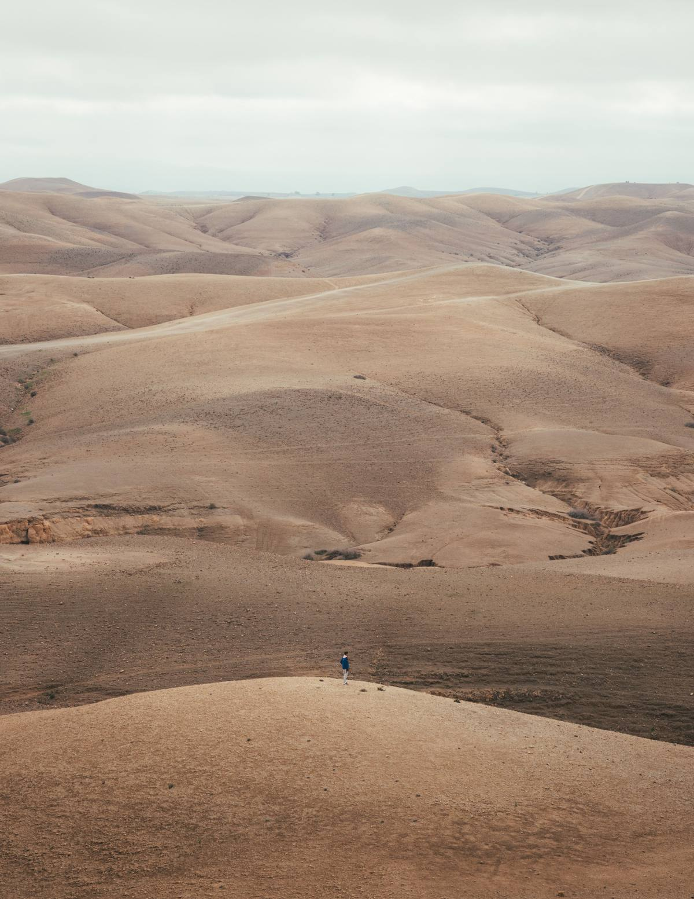
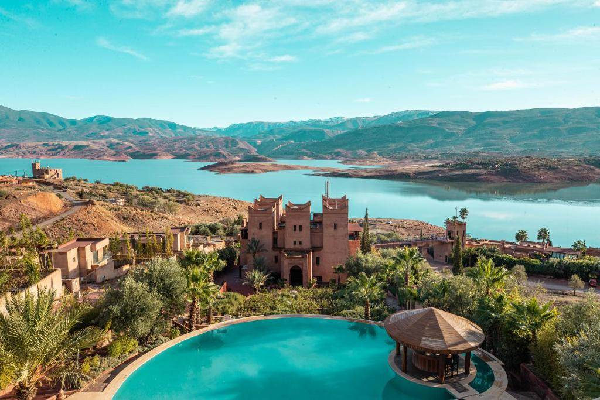
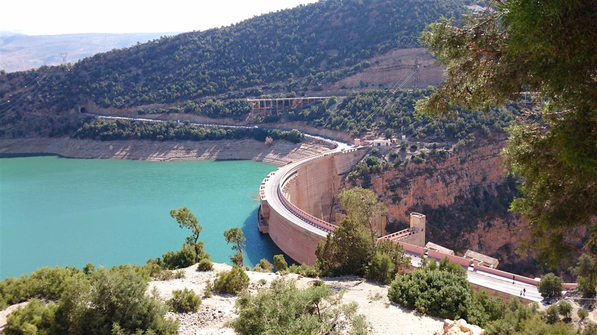
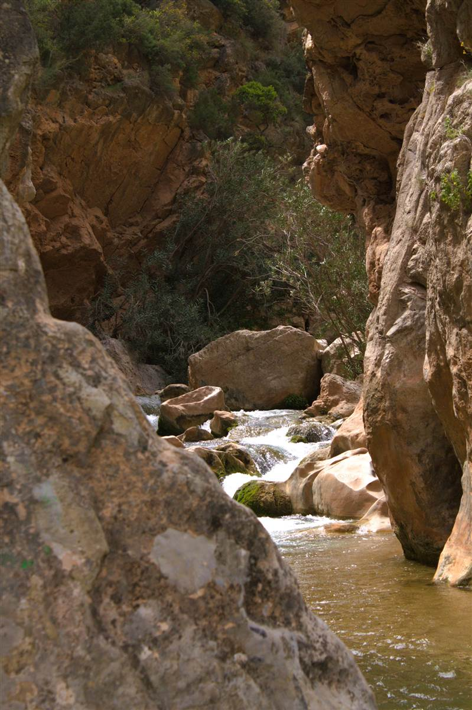
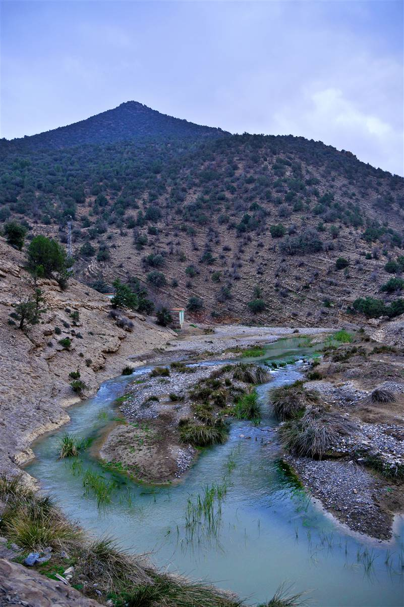

Bin El Ouidane: Lake & Mountains
A great mountain lake under Atlas walls — Bin El Ouidane is the quiet water stop between Azilal and Beni Mellal.

Water in the mountains
Held by one of Africa's great dams, the Bin El Ouidane lake spreads blue-green beneath the Atlas wall — boat trips cross it, hillside guesthouses face it, and the surrounding foothills walk easily. It is a place travellers reach on the way between the Marrakech plains and the high country around Azilal.
Bin El Ouidane works as a one-night breather inside an Atlas traverse — water, quiet and mountain air after the medinas. Pair it with our Azilal-to-Rich journey country, and the high Atlas opens east.
Highlights
- The lake — blue-green water under the Atlas wall.
- Boat trips — crossings to quiet far shores.
- The dam viewpoint — one of Africa's great dams.
- Foothill walks — easy trails above the water.
- Lakeside stays — guesthouses facing the water.
Good to know
How to get there
The lake sits between Azilal and Beni Mellal, reached by mountain road from Marrakech. Public connections are thin — with Abrid, the drive and the lakeside stay are part of your Atlas route.
How long to stay
We recommend one night above the water. It is a breather stop, best folded into a longer Atlas traverse.
Best time to visit
Spring and autumn are generally ideal; summer is warm but the water cools everything. Winter nights get cold at altitude.
Best areas to visit in Bin El Ouidane
Lake, dam and foothills around one blue-green water.
Shores & boats
Crossings to quiet far shores and golden-hour water.
Viewpoint
One of Africa's great dams seen from above.
Walking country
Easy trails above the water from lakeside stays.
Trips visiting Bin El Ouidane
Private Custom Trips
Atlas traverses built around you — Bin El Ouidane, Azilal and the high country.
View tourNo fixed Bin El Ouidane trip yet? Tell us your dates and we add the lake to an Atlas route.
Morocco guides
Bin El Ouidane questions
Is Bin El Ouidane worth visiting?
Yes as a one-night lake breather inside an Atlas traverse — water, quiet and mountain air. Not a standalone destination for most travellers.
Can you swim or boat on the lake?
Boat crossings run from the shore; swimming depends on season and local guidance. Your driver arranges what is running when you visit.
Can Abrid include Bin El Ouidane in my trip?
Easily — it slots into Marrakech-to-Azilal Atlas routings. Request it here.
Bin El Ouidane in photos
Real shots from our routes around Bin El Ouidane. All photos from the Abrid Morocco local library.




Want to include Bin El Ouidane in your Morocco trip?
Tell us your dates and interests — we fold the lake into an Atlas traverse with transport, stays and guides handled.
Plan My Morocco Trip Explore Trips